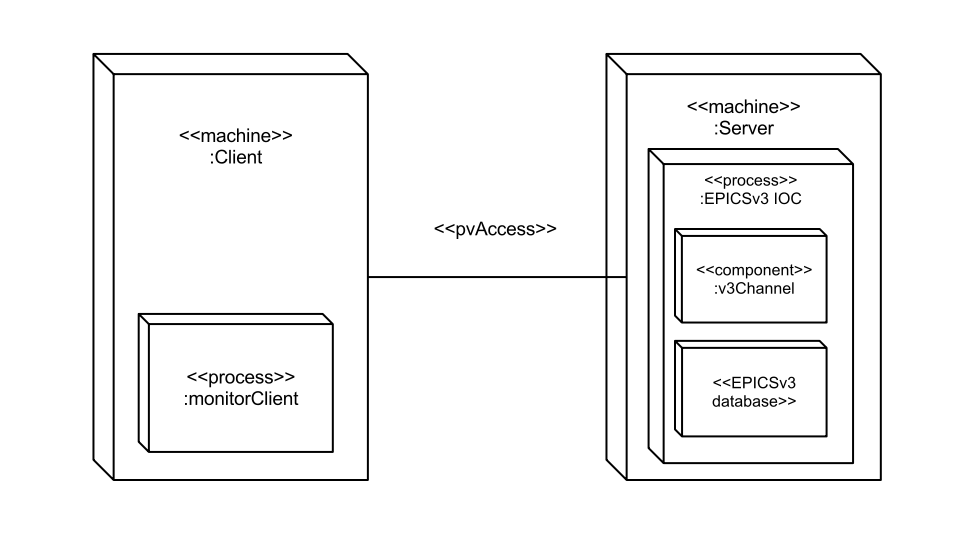
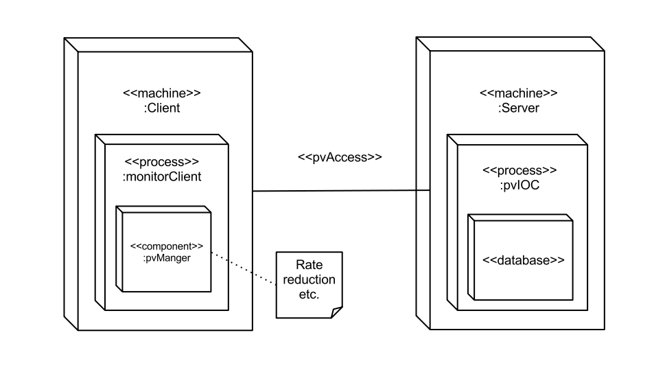
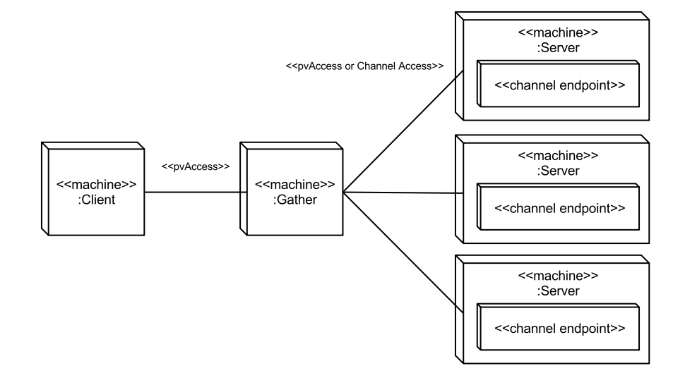
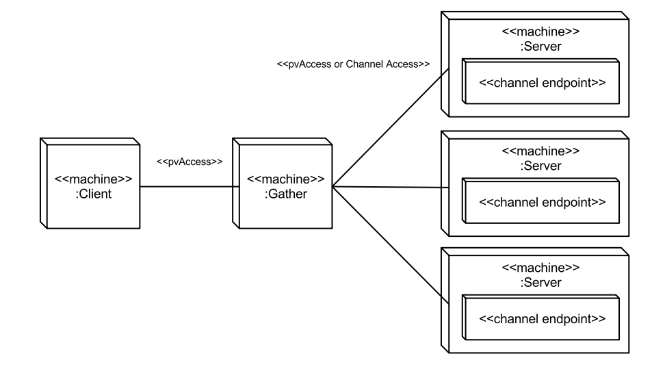

EPICSv4 Architectures
- Editors:
- James Rowland, Diamond
Table of Contents
- Table of Contents
- Introduction
- Overview of EPICSv4
- Standard Components and Nominal Architectures
- Hello World
- Process Control / SCADA
- EPICSv3 Integration (v3Channel)
- Client Stream Query (pvManager)
- Service Aggregation (Gather)
- Scripting
- Save and Restore
- Time-Series Database
- Data Acquisition
- Service Oriented Architecture (SOA) and Directory Services
- Relational Database Service
- Name Resolution Server
Introduction
EPICSv4 extends the scope of EPICSv3 with structured data types and request/response messaging patterns.EPICSv3 systems consist of I/O controllers (IOCs) connected to temperatures, magnet currents, beam positions, and other scalars and vectors of timestamped primitive types. Above this layer are objects such as response matrices, machine lattice descriptions and backup and restore groups that are not easily modelled in the limited range of data types available in EPICSv3. Facilities use tools such as Matlab and SDDS to model high level concepts. Similarly many high-level services are request/response, returning the result of some processing or retrieval in response to a query. Tools such as Corba or Web Services fill this role, as EPICSv3 only has 'put with callback', a response that indicates that processing has completed but carries no payload.
EPICSv4 supports Java, C++ and Python clients and servers on Windows, Linux and OSX.
Overview of EPICSv4
Type System and Serialization (pvData)
pvData is a run-time type system with serialization and introspection. A similar product is Google Protocol Buffers, an important difference is that pvData always has the full type information (including field names) present when messages are encoded or decoded.Network Procotol (pvAccess)
See also pvAccess Protocol Specification (Technical Document)The EPICSv4 network protocol is pvAccess. pvAccess is a TCP protocol, a connection to a named endpoint is a Channel. Channel endpoints have unique names within a facility, and the default name resolution method is UDP broadcast prior to connection. Channels are typed with the type determined by the server.
pvAccess supports the following messaging patterns:
- Introspection
- GetField (client asks for the type of a channel)
- Request/Response
- Put
- Get
- PutGet (atomic)
- Process
- Remote Procedure Call (like PutGet but request type is determined by the client)
- Publish/Subscribe
- Monitor
I/O Controller (pvIOC)
The IOC combines pvData structures with processing behaviour to form records. A domain-specific configuration language allows these records to be connected in a dataflow style to form a database, allowing customization of behaviour without systems programming.Normative Types
To allow generic clients and prevent the unbounded spread of application-specific types, the EPICSv4 Working Group specifies a set of (about 10) Normative Types for common use cases. Examples are timestamped control data, relational database tables and multi-dimensional images. Generic tools will operate on Normative Types and it is expected that facilities will use Normative Types for the majority of applications.Standard Components and Nominal Architectures
This section demonstrates the use of EPICSv4 with components that are found in many facilities. It is typical for each facility, and often each service within a facility, to use their own network protocol and data model.Hello World
The most basic architecture is single client, single server, using RPC. The RPC server does not contain an EPICSv4 database, the developer implements the processing in C++, Java or Python code.

Process Control / SCADA
EPICSv4 supports all EPICSv3 messaging patterns including publish/subscribe via Monitors.
EPICSv3 Integration (v3Channel)
Currently EPICSv4 focusses on high-level applications. It is expected that facilities will continue to use EPICSv3 IOCs for I/O until drivers are available for EPICSv4 IOCs. v3Channel is a pvAccess server that runs on an EPICSv3 IOC, allowing EPICSv4 clients to communicate with EPICSv3 process variables.
Client Stream Query (pvManager)
pvManager is a client utility library for EPICSv3 and EPICSv4 that performs rate reduction and averaging on data streams. This abstration layer makes writing robuts clients easier, especially GUIs. Service Aggregation (Gather)
Many facilites need to concatenate and summarize information from many sensors into a single location, for example the electron beam position in a synchrotron is presented to the user as a vector but is read from many devices throughout the facility (see Diamond BPM Concentrator). The Gather service is a standard implementation of this pattern.The Gather service combines values from multiple sources into a single point. The Gather service can also support EPICSv3 Channel Access. This is so that Gather can be used without upgrading existing EPICSv3 servers with v3Channel. Gather can be used as a software component or a service.
Gather used as a software component:  Gather used as a service component (details omitted):

Gather used as a service component (details omitted):

Scripting
Matlab Middlelayer is an interactive scripting environment used for machine commissioning. The EPICSv4 Java client connects Matlab to high-level services and process data. The Normative Types provide data in a form suitable for manipulation without further processing, such as timestamps in Matlab date format, and tables as structures of arrays.Save and Restore
Process data setpoints must be saved to permanent storage and restored to reset the facility to a known working state. MASAR is the EPICSv4 Save and Restore tool. It combines RPC, Service Aggregation (Gather), and RDB access. An RPC client initiates the save or restore request, the MASAR server Gathers the process variables and stores them in the RDB.Time-Series Database
The Channel Archiver returns tables of time-series data. EPICS archivers are a family of specialized time-series databases. The EPICS Channel Archiver (RTree) provides an XMLRPC server, this is a web service protocol using XML to serialize requests and responses over an HTTP connection. The Archiver returns vectors of EPICSv3 data types as the result of time range queries.Data Acquisition
X-Ray detectors produce image frames annotated with experimental metadata. 10 Gigabit Ethernet is increasingly used to transport these images from the acquisition machine to a storage server. Protocols for this include network or distributed file systems such as NFS or Lustre, or custom TCP protocols. Each custom TCP protocol must deal with connection handing, error handing and serialization. Data is stored in HDF5 files.Service Oriented Architecture (SOA) and Directory Services
Very roughly, SOA = Services + Discovery. The discovery mechanism is ChannelFinder, the EPICSv4 Directory Service.ChannelFinder can return lists of Channel names and properties associated with a particular key. This can be used to answer queries such as 'return a list of channels that are connected to a magnet'. Other high-level services such as Backup and Restore may depend on the information in the Directory Service. The Directory Service may store information in a relational database but the goal is to have a simple interface that models the connections between items in a typical control system in a standard way.
The first vesion of the EPICSv4 Directory Service will be based on ChannelFinder. ChannelFinder is a REST directory web service with a relational database back end. An EPICSv4 interface to ChannelFinder is under development.
The ability to populate the Directory Service from an IRMIS database is also under development but using IRMIS is not mandated.